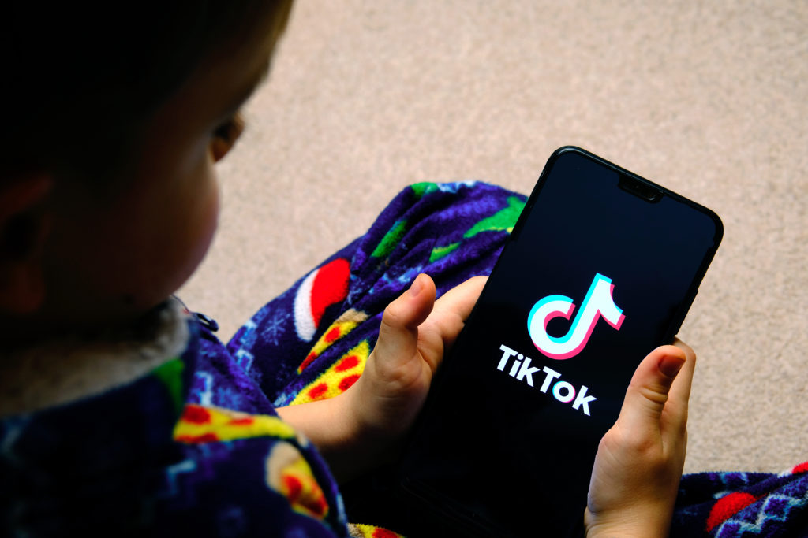

"La distracción constante no es extraña cuando nuestra atención —gracias a la configuración del mundo digital— está dividida. Mientras tratamos de terminar nuestras labores diarias, respondemos mensajes, vemos videos, revisamos el mail y chequeamos redes sociales. Agotador."
- Pablo Toro
¿Qué hace el cerebro cuando percibe esa gran cantidad de estímulos de forma simultánea? Se adapta. Y lo hace economizando nuestra capacidad de atención. Así, en solo segundos, decide si lo que ve merece o no atención. Si no hay recompensa inmediata, pasa al siguiente estímulo.
El problema surge cuando esta búsqueda constante de gratificación se vuelve un patrón. Es decir, cuando esperamos resultados rápidos y nos cuesta concentrarnos sin mirar el teléfono. Ya no podemos comer sin revisar redes, ver una película sin pausarla para responder un mensaje, o leer sin chequear notificaciones.
“Personalmente, creo que ya no podría ver una película entera. ¿Por qué querría hacerlo? Un reel de Instagram podría darme el mismo golpe de emoción en menos tiempo: está literalmente diseñado para eso”, señala el medio de la Universidad de Oxford, The Oxford Blue. Y agrega: “Casi el 50% de los usuarios encuestados por TikTok dijeron que los vídeos de más de un minuto les resultan estresantes”.
Este comportamiento ha sido llamado “TikTok Brain”, un fenómeno que refiere al impacto del uso frecuente de estas apps en nuestra capacidad de atención y procesamiento, debido al sistema de recompensa automático y las altas dosis de dopamina que generan.
Dicho simple: ahora perdemos el hilo más rápido. “¿Es posible vivir en un mundo donde no es necesario concentrarse por más de un minuto? Quizás hoy sea factible”, teoriza el psiquiatra Pablo Toro (@dr.pablotoro). Lo que está en juego, dice, es nuestra atención sostenida: la capacidad de mantener el enfoque durante minutos, incluso con distracciones alrededor.
“El cerebro es el órgano más plástico que tenemos. Si no usamos una función cognitiva, la perdemos con el tiempo. Con estos videos cortos, uno se entretiene porque generan dopamina, pero no aplicás atención sostenida. ¿Qué pasa a futuro? Hasta leer un titular se hace difícil”, concluye.